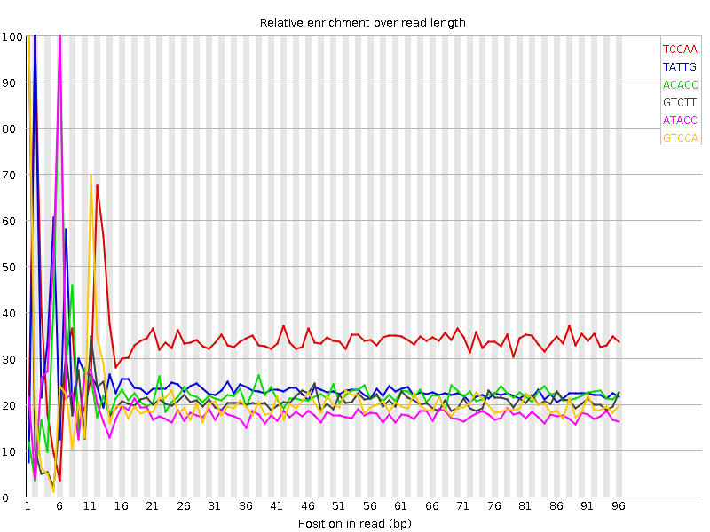

Thu 12 Feb 2015
8_140619_BC47HDACXX_P1260_1015_2.fastq.gz
Summary
![[FAIL]](Icons/tick.png) Basic Statistics
Basic Statistics
| Measure |
Value |
| Filename |
8_140619_BC47HDACXX_P1260_1015_2.fastq.gz |
| File type |
Conventional base calls |
| Total Sequences |
3181425 |
| Sequence length |
101 |
| %GC |
38 |
Back to summary
![[FAIL]](Icons/warning.png) Kmer Content
Kmer Content

| Sequence |
Count |
Obs/Exp Overall |
Obs/Exp Max |
Max Obs/Exp Position |
| TCCAA |
563150 |
1.7168735 |
5.064745 |
2 |
| TATTG |
652885 |
1.2220536 |
5.011571 |
2 |
| ACACC |
236980 |
1.1751974 |
5.1439376 |
6 |
| GTCTT |
377660 |
1.1460742 |
5.423087 |
1 |
| ATACC |
367365 |
1.1199844 |
5.8169203 |
6 |
| GTCCA |
214525 |
1.0624324 |
5.115728 |
1 |
| GTATT |
546750 |
1.0233927 |
7.391572 |
1 |
| AATAC |
527210 |
0.9913788 |
5.5104036 |
5 |
| ATATA |
809805 |
0.9361631 |
5.3747377 |
1 |
| ATACT |
481500 |
0.902455 |
5.7973104 |
6 |
| TACTG |
295235 |
0.89888966 |
5.044883 |
7 |
| TATTA |
755130 |
0.8700939 |
5.9328647 |
2 |
| TATAC |
458850 |
0.86000305 |
6.701453 |
5 |
| GTATA |
414320 |
0.7780654 |
8.306486 |
1 |
| TATAA |
635130 |
0.73423266 |
5.1533337 |
2 |
| GTCTA |
238870 |
0.7272774 |
5.214409 |
1 |
Back to summary
![[FAIL]](Icons/error.png) Per base sequence content
Per base sequence content